TOTAL TRANSFER MARKET VALUE: GBP 375 MILLION
 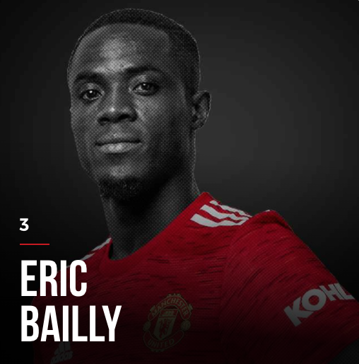
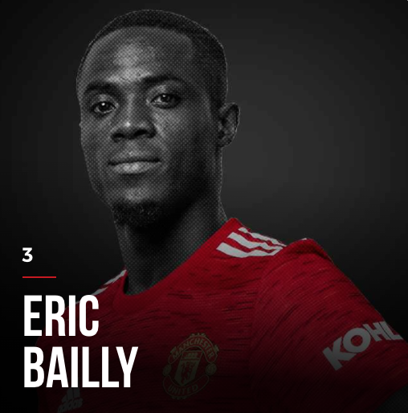

 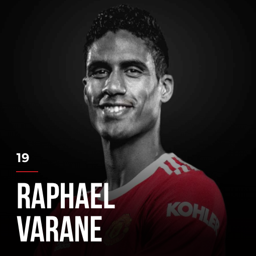
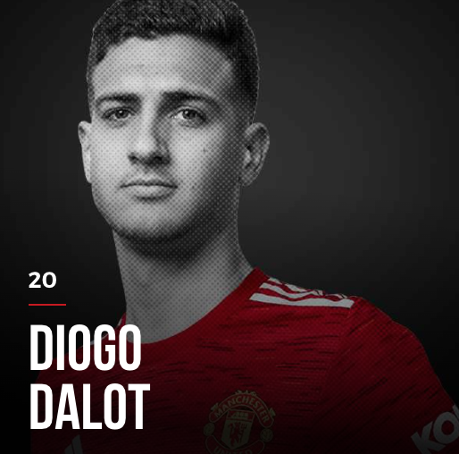
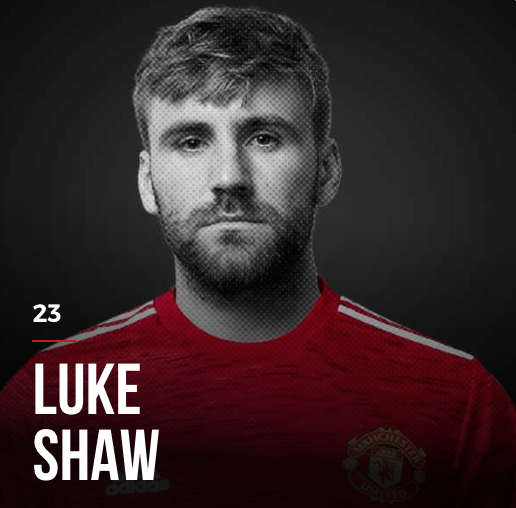
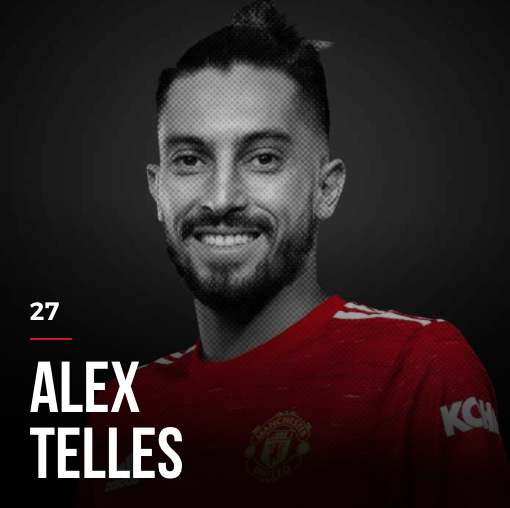
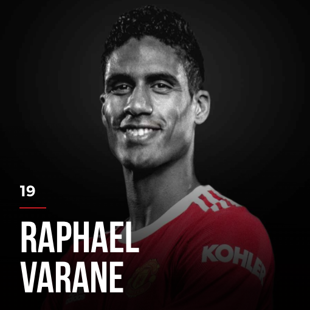
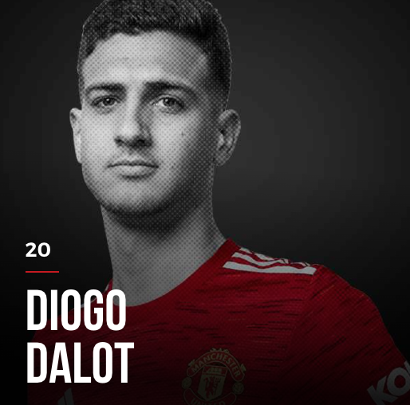
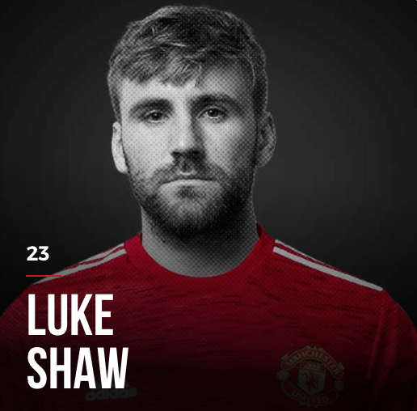
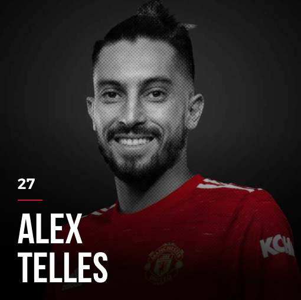
 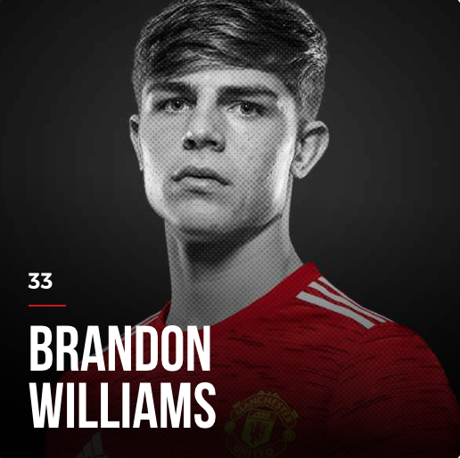
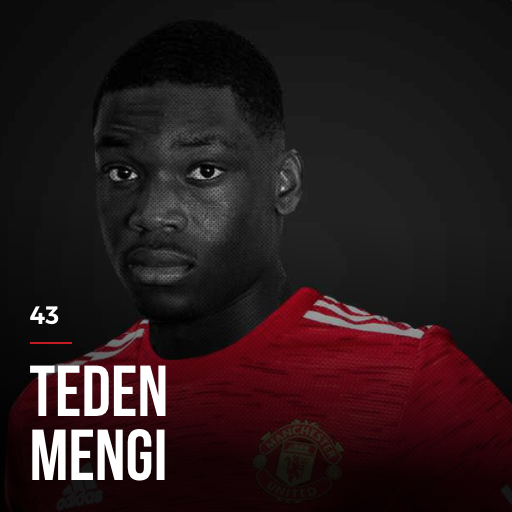
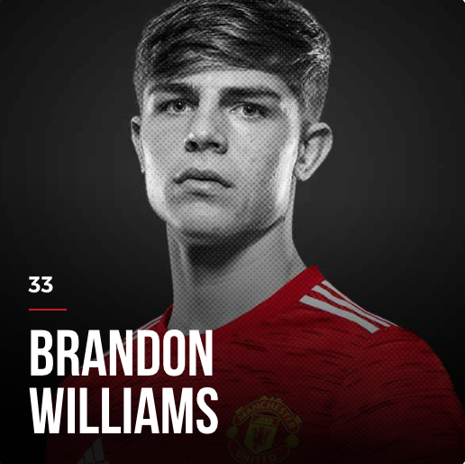
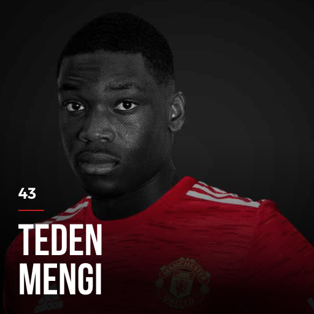
Maguire is currently the captain of the team. However, with his recent form, supporters start to ask for a change in the captain position.
Bailly, Jones, Shaw and Dalot are easily prone to injuries. However, their play style is very concrete for the defending system.
Currently, Lindelof and Varane are the most trusted for the center-back positions.